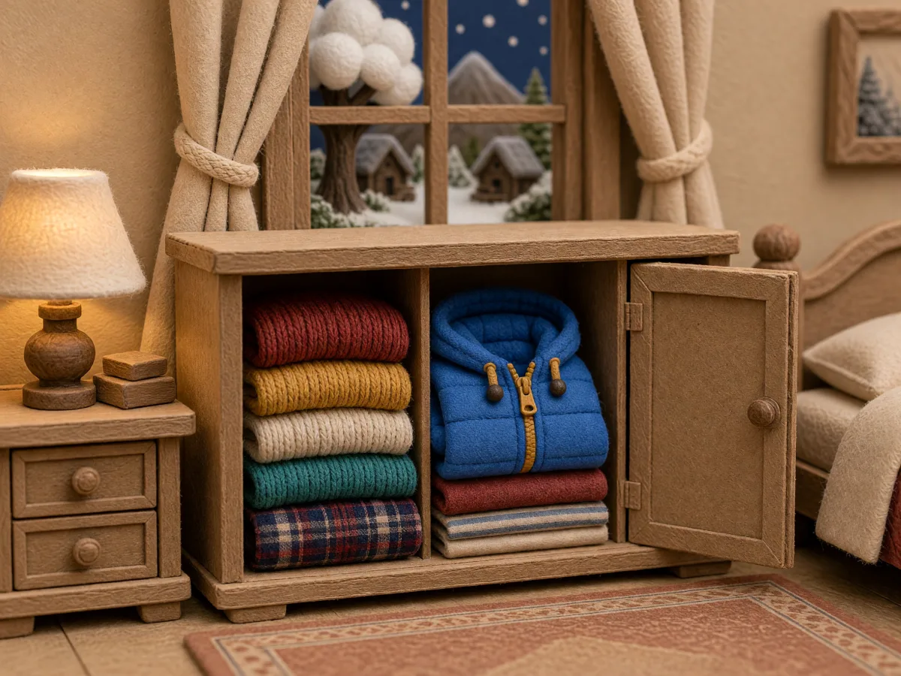
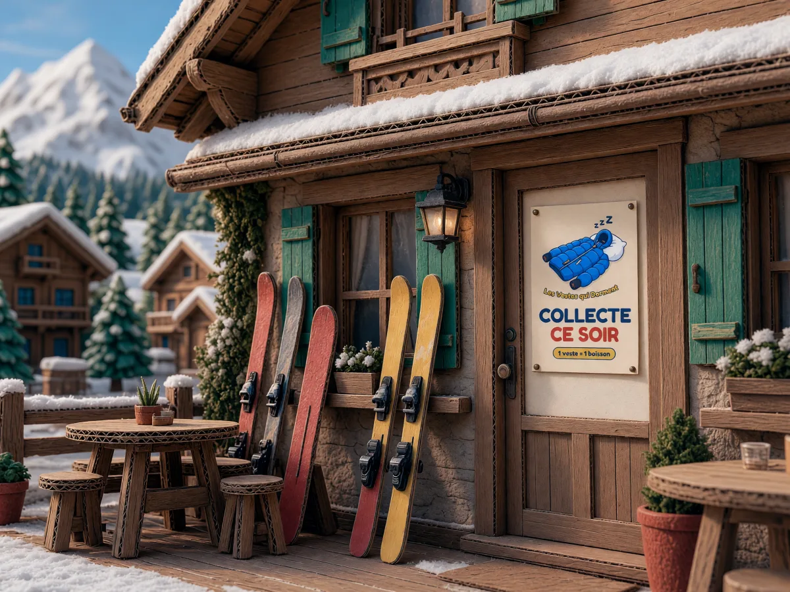
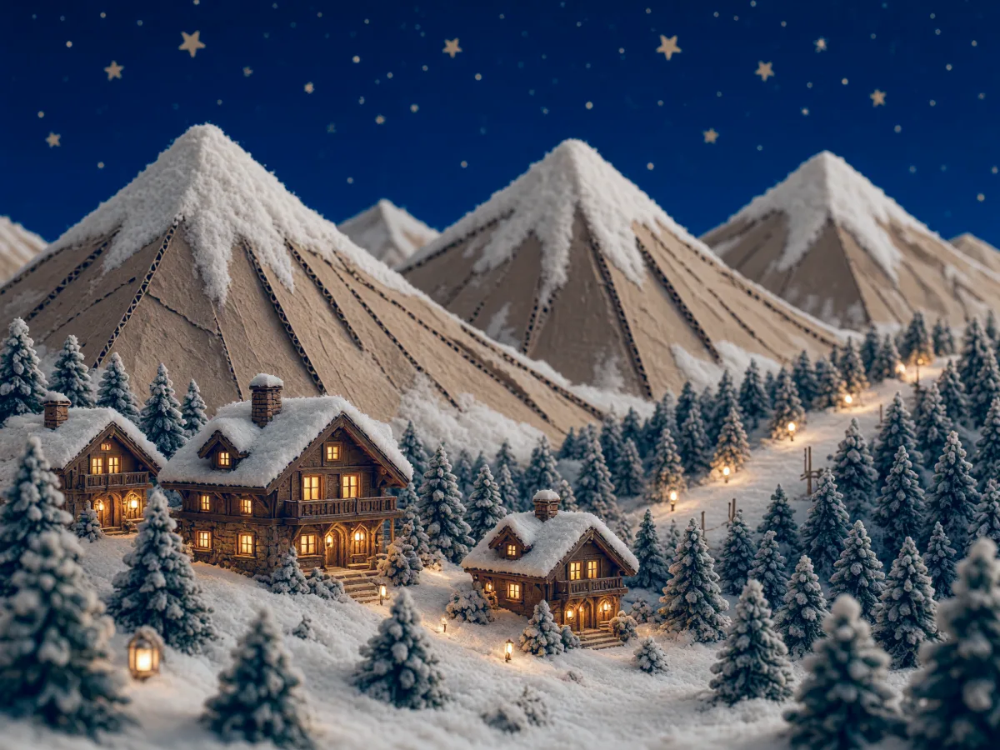
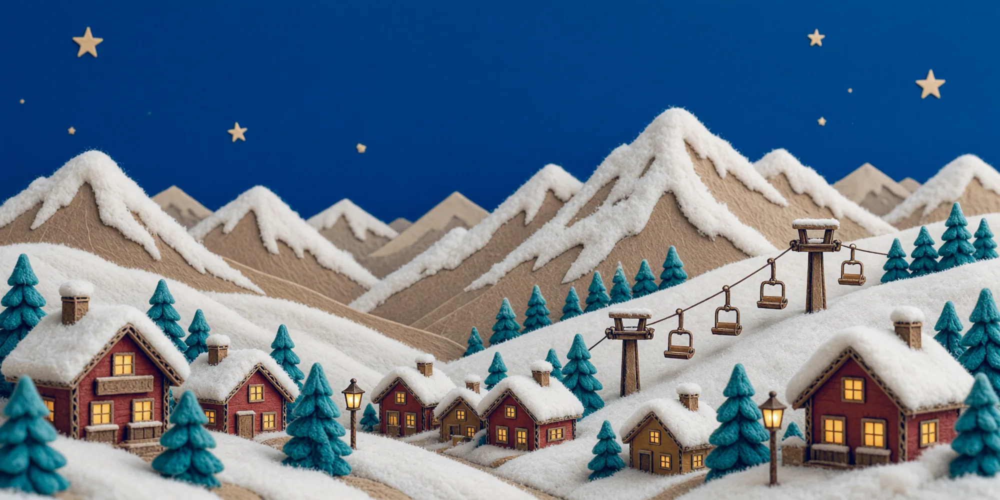

J'ai une veste qui dort
Si c'est chaud et propre, ça peut servir. Rapporte-la à la prochaine soirée dans ta station : le bar t'offre une boisson.
Voir la prochaine soiréeAprès sa dernière saison, on la garde, on la met de côté. Au cas où. Et elle s’endort au fond du placard.
Dans une chambre de chalet, une armoire ouverte contient deux piles de vêtements et une place libre. La doudoune bleue, pliée, vient s'y poser. Les saisons passent à la fenêtre et d'autres vêtements s'empilent par-dessus : un pull, un pantalon en velours, une veste moutarde, une polaire. La doudoune dort tout en bas.
On se retrouve au bar avec nos vestes endormies. Et pour chaque veste apportée, une boisson sera offerte.
De nuit, on remonte la rue enneigée du village jusqu'au bar, où une affiche annonce « Collecte ce soir ». La porte s'ouvre sur un bar plein de villageois qui boivent des chocolats chauds. Au comptoir, un villageois pose sa doudoune bleue et le barman lui tend une boisson chaude.
Elle apporte les vestes dans la rue, à celles et ceux qui en ont le plus besoin. Rien n’est revendu et nous nous reposons sur leur connaissance du terrain.
Dans une rue de la ville, la nuit, un flocon de neige flotte. Une bénévole passe avec la doudoune bleue pliée dans les bras et le flocon s'envole en virevoltant. On la suit quelques pas : elle tend la doudoune à un homme au bonnet gris, qui la prend et lui sourit.
On réveille les vestes et le matos de montagne qui dorment au fond des placards pour les offrir à celles et ceux qui dorment dehors. La collecte se fait pendant des soirées dans des bars de stations de ski : le bar fait une belle soirée, on passe un bon moment, et les vestes repartent au chaud avec une association de solidarité partenaire.
Une veste rapportée au bar, une boisson offerte.

Si c'est chaud et propre, ça peut servir. Rapporte-la à la prochaine soirée dans ta station : le bar t'offre une boisson.
Voir la prochaine soirée
Une soirée qui fait venir du monde, une ambiance qui fait du bien, et ton bar associé à une action solidaire. On en parle et on cale une date ensemble.
Accueillir une soirée
Ça tourne à Avoriaz depuis deux ans. On cherche des référents locaux pour essaimer dans d'autres stations, et on t'aide à démarrer.
Voir comment ça marche
Ou directement : contact@lesvestesquidorment.fr